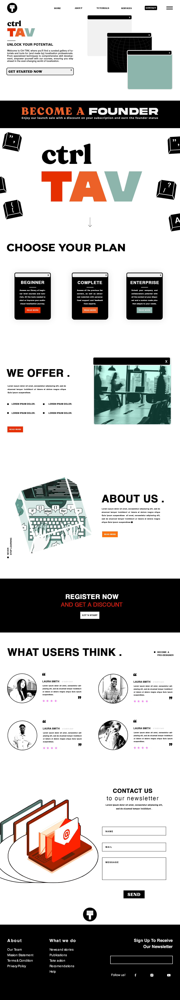
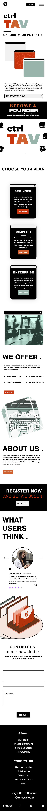

CTRL TAV
CTRL TAV represents an educational platform that uses technology to offer translation solutions along with comprehensive courses. The name is easy to remember and implies control and professionalism in translations, as well as the use of a keyboard, letters, symbols and technology.
Domain: ctrltav.com
CTRL TAV will offer educational courses and translation solutions for both translators and companies. It will mainly feature courses from beginner to advanced levels, certification programs, and specialized training. Additional resources like articles, glossaries, and community forums will support translators.
With the world becoming more connected, the need for accurate translation is growing. CTRL TAV aims to make cross-language communication easier and support translators in their careers. By offering both services and education, we want to help people and businesses connect and understand each other better.
Scenario 1: What are the available courses and how can I sign up to one?
Scenario 2: Where can I find resources to improve my translation quality level?
The primary colors for the site will be black and white, used for the background and text. Accent colors will be:
Fonts selected for the website:
Desktop View:
Mobile View:
